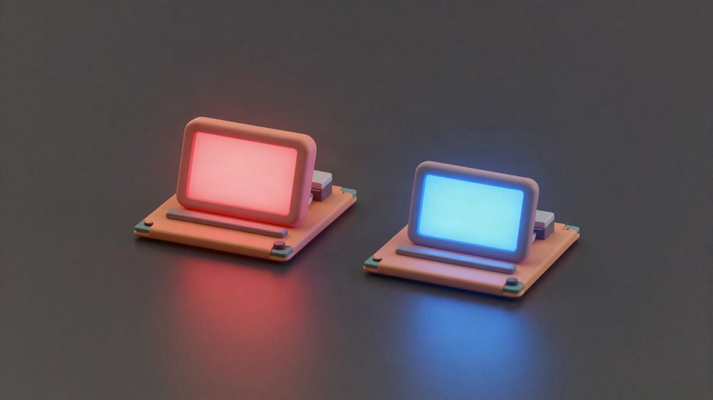

AMD u 4. kvartalu očekuje prihod od 17 milijardi dolara i prvi put prestiže Intel

AMD je u trećem kvartalu 2026. ostvario rekordnih 13,4 milijarde dolara prihoda, a za četvrti kvartal najavljuje oko 17 milijardi. Ako to ostvari, prvi put će nadmašiti Intel, čija prognoza iznosi 15 do 16 milijardi dolara. Rast vuku data centri, dok segmenti Client i Gaming padaju.
AMD je u utorak objavio rezultate za treći kvartal 2026. i najavio prihod od oko 17 milijardi dolara u četvrtom kvartalu, uz odstupanje od 3 posto. Ako ostvari prognozu, prvi put će prestići Intel, koji za isto razdoblje očekuje 15 do 16 milijardi dolara. Na sredini obiju prognoza AMD bi imao prednost od oko 1,5 milijardi dolara.
Treći kvartal bio je najbolji dosad. Prihod je iznosio 13,377 milijardi dolara, naspram 9,25 milijardi godinu ranije i 11,54 milijardi u prethodnom kvartalu. Bruto marža bila je 54 posto, a neto dobit je porasla 95 posto, na 2,43 milijarde dolara. Razrijeđena dobit po dionici iznosila je 1,46 dolara, naspram 0,75 dolara prije godinu dana.
Data centeri vuku rast
Segment data centera ostvario je rekordnih 8,55 milijardi dolara, 97 posto više nego lani i 27 posto više nego u prethodnom kvartalu. Operativna dobit porasla je 168 posto, na 2,88 milijardi dolara, a operativna marža sa 25 na 34 posto. AMD to pripisuje potražnji za novim Epyc procesorima i lansiranju akceleratora Instinct MI455X, na kojima se temelje Helios sustavi na razini racka. AMD tvrdi da Anthropic, Meta, Microsoft, OpenAI i Oracle Cloud Infrastructure već na prvim Helios sustavima pokreću radna opterećenja.
Za četvrti kvartal AMD za data center predviđa oko 12,8 milijardi dolara prihoda. Udio tog segmenta u ukupnom prihodu bio je 64 posto, a lani u trećem kvartalu 47 posto. Za 2027. očekuje da će prihod od server CPU-a porasti dvostruko, a AI akceleratori i rack sustavi više nego dvostruko, pa bi data center činio više od 80 posto prihoda. "Sada očekujemo da će prihod od servera u 2027. biti dvostruko veći nego godinu ranije, a prihod od AI-ja u data centrima rasti još brže nego što smo predviđali prije devedeset dana", rekla je izvršna direktorica Lisa Su.
Client i gaming padaju
Segment Client and Gaming imao je 3,722 milijarde dolara prihoda, 8 posto manje nego lani i 3 posto manje nego u prethodnom kvartalu. Prodaja client CPU-a iznosila je 2,95 milijarde dolara, naspram 3,06 milijarde u prethodnom kvartalu i 2,75 milijarde godinu ranije. Gaming je pao na 773 milijuna dolara sa 1,298 milijarde, jer su Microsoft i Sony kupovali manje console SoC-ova, a prodaja Radeon RX grafičkih kartica ostala je slaba. Operativna dobit segmenta pala je 34 posto, na 573 milijuna dolara.
AMD za četvrti kvartal predviđa pad tog segmenta za više od 20 posto u odnosu na prethodni kvartal, jer više cijene memorije slabe potražnju za PC-jevima. Su za 2027. očekuje pad isporuka PC-ja za dvoznamenkasti postotak, no tvrdi da će AMD nadmašiti tržište fokusom na enterprise, premium potrošače i desktop procesore. Konkretne prognoze prihoda za taj segment u 2027. još nema.
Embedded
Embedded segment porastao je 29 posto na 1,11 milijarde dolara, a operativna dobit 60 posto, na 453 milijuna dolara. AMD to povezuje s potražnjom iz zrakoplovstva i obrane, automobilske industrije, komunikacija i industrije. Za četvrti kvartal očekuje dvoznamenkasti rast u odnosu na prethodni kvartal. Su kaže da je AMD ove godine nastavio zaključivati dizajn-ugovore vrijedne više od 18 milijardi dolara, što bi bila treća uzastopna rekordna godina.
Izvor: Tom's Hardware